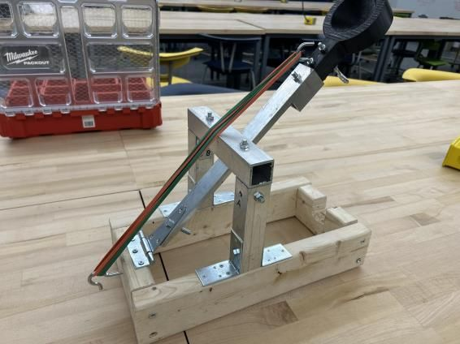
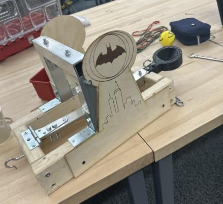
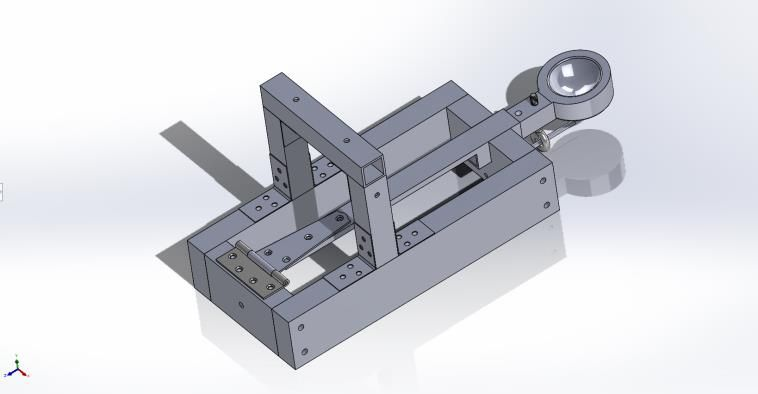
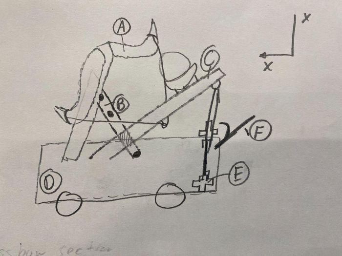
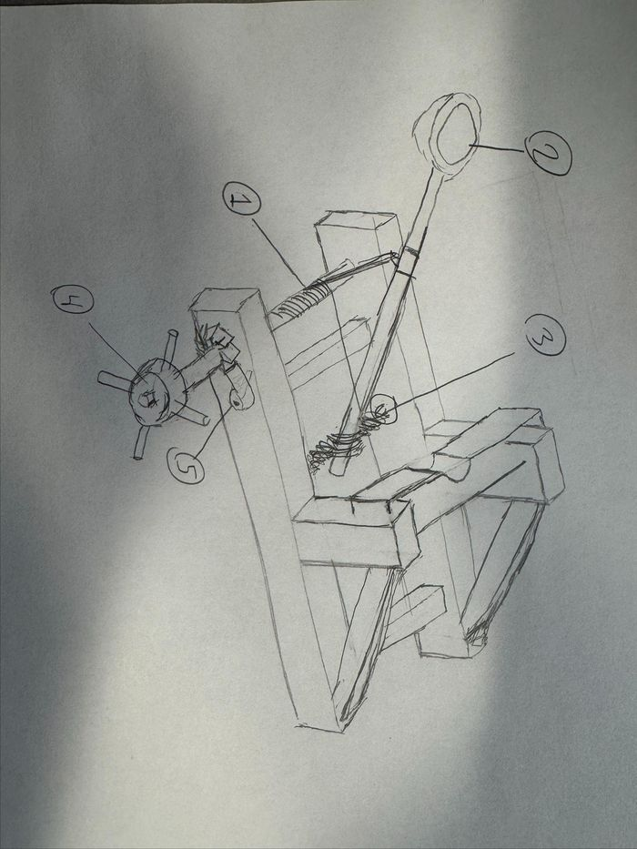
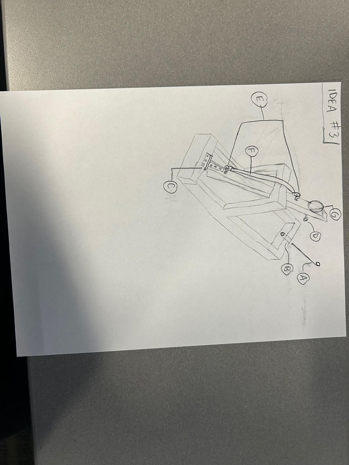
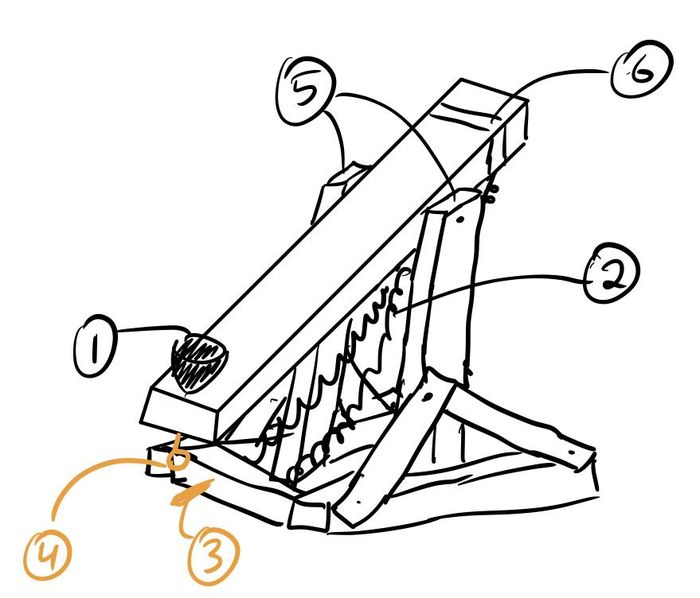
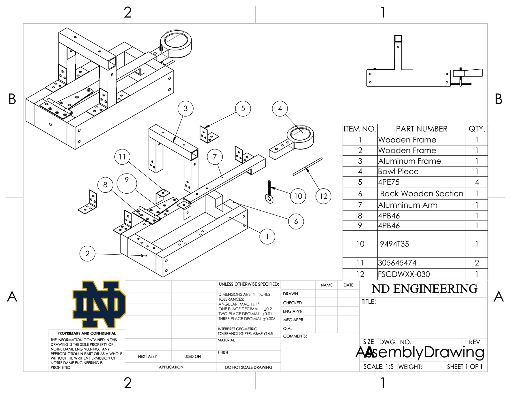
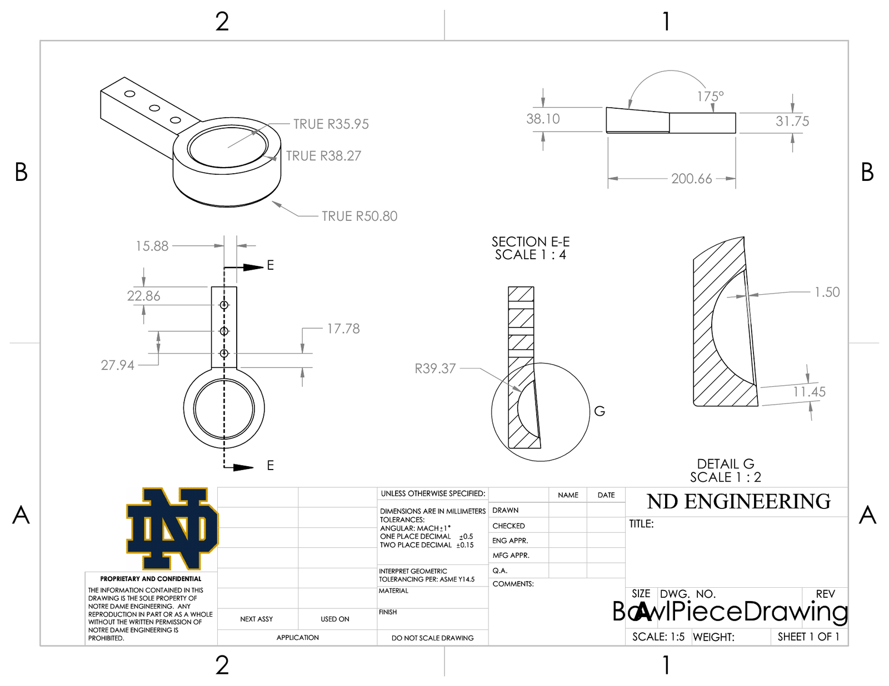

The Batapult
A four-person team designed and built a human-triggered catapult to launch a tennis-size ball 20 feet within tight size and material limits. I produced the team’s complete engineering drawing package.



From requirements to a concept
The brief called for a reusable catapult with a human-activated trigger, a frame that couldn't be anchored down, a footprint under 20 × 20 inches, and no more than four feet of wood. Each of us sketched a concept: a crossbow, a winch-and-torsion design, a bungee design, and a double spring. The team chose the bungee concept as the simplest design that met every requirement and was easy to model.




The four team concepts. The bungee design (third) was selected.
The design
The aluminum firing arm lies flat in a cutout in the wooden base and pivots on a hinge. Elastic bands provide the launch force, a pin locks the arm until release, and an aluminum upright frame stops the arm at 45°. A 3D-printed cup slides into the hollow end of the arm to hold the ball.
My role: the drawing package
I contributed a concept and SolidWorks parts, and I produced all of the team's engineering drawings: the assembly drawing with an exploded view and bill of materials, plus detailed drawings of the upright frame, firing arm, wooden base and cup. Teammates handled fabrication.


Results
The requirement was 20 feet. On test day the Batapult threw 35, 38 and 40 feet, roughly double the target on every shot, using only human power and the elastic bands.
What we'd change
The catapult beat its target, but testing exposed weak points. Cutting material out of the aluminum arm to lighten it left it prone to bending, and the hook placement added to the bending load. A plastic insert in the hinge added friction that slowed the arm. As we added bands, locking the arm got harder. Our proposed fixes were a solid arm, padding where the arm hits the upright, a hinge without the insert, and a ratchet-and-pawl lock for easier loading.